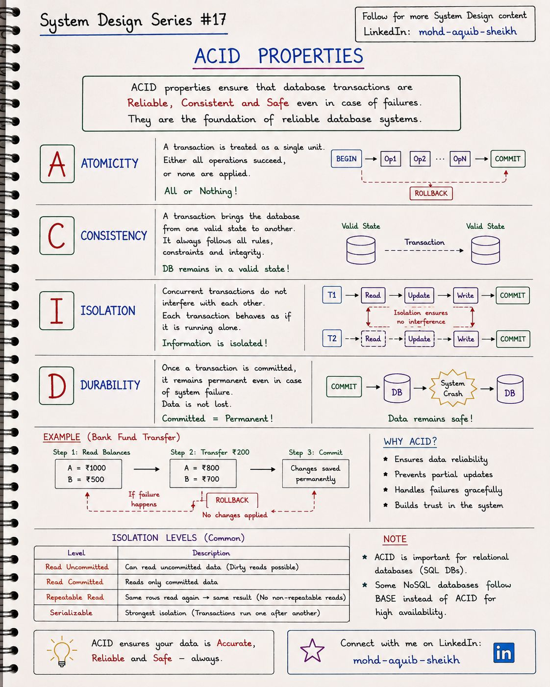
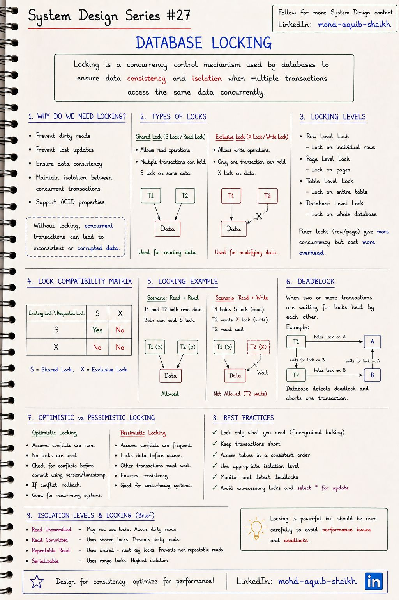
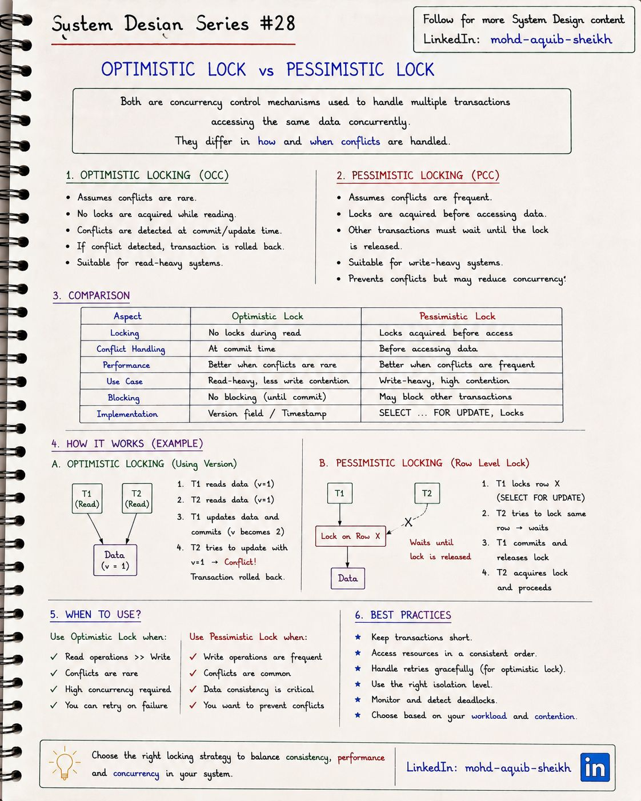

Транзакции и блокировки
Что именно обещает база данных словом «транзакция», какие аномалии возможны при одновременной работе и двумя какими способами — пессимистичным и оптимистичным — приложение защищает данные от потерянных обновлений.
7.1ACID#17
Четыре свойства, которые делают транзакцию надёжной: изменения применяются целиком или не применяются вовсе, данные остаются корректными, параллельные транзакции не мешают друг другу, а зафиксированное переживает сбой.


| Свойство | Смысл | Чем обеспечивается | |
|---|---|---|---|
| A | Atomicity | Всё или ничего: при ошибке — откат всех операций | Журнал отмены (undo), ROLLBACK |
| C | Consistency | Транзакция переводит базу из одного корректного состояния в другое | Ограничения (PK, FK, CHECK, UNIQUE) и код приложения |
| I | Isolation | Параллельные транзакции ведут себя так, будто выполняются по очереди | Блокировки и/или MVCC |
| D | Durability | После COMMIT данные не пропадут при сбое | Журнал упреждающей записи (WAL), fsync, репликация |
C — единственное свойство, за которое отвечает не только база. «Сумма по счетам не меняется при переводе» — инвариант приложения; база лишь гарантирует, что ваши ограничения не будут нарушены, а A, I и D дают инструменты, чтобы вы сами его не нарушили.
Уровни изоляции и аномалии
Полная изоляция дорогая, поэтому базы предлагают уровни послабее. Таблица на конспекте перечисляет уровни; ниже — какие аномалии каждый из них допускает.
| Уровень | Dirty read | Non-repeatable read | Phantom read | По умолчанию в |
|---|---|---|---|---|
| Read Uncommitted | возможно | возможно | возможно | — |
| Read Committed | нет | возможно | возможно | PostgreSQL, Oracle, SQL Server |
| Repeatable Read | нет | нет | возможно по стандарту | MySQL (InnoDB) |
| Serializable | нет | нет | нет | — |
- Dirty read — прочитали незафиксированные данные другой транзакции, которая потом откатилась.
- Non-repeatable read — одна и та же строка, прочитанная дважды в одной транзакции, вернула разные значения.
- Phantom read — повторный запрос по условию вернул другой набор строк: кто-то вставил подходящую.
- Lost update — две транзакции прочитали значение, обе изменили и записали; одно изменение пропало. Этой аномалии нет в стандарте, но именно она чаще всего ломает балансы и остатки — ей посвящены разделы 7.2 и 7.3.
- Serializable не выполняет транзакции «одну за другой» буквально — он гарантирует результат, эквивалентный некоторому последовательному порядку. PostgreSQL добивается этого оптимистично (SSI): транзакции идут параллельно, а при обнаружении опасной зависимости одна получает ошибку сериализации и должна быть повторена.
- Одинаковые названия уровней значат разное в разных СУБД. Repeatable Read в PostgreSQL — это изоляция снимков (фантомов нет, зато возможен write skew); в MySQL — снимок для обычных чтений плюс gap-блокировки для блокирующих. Проверяйте документацию своей базы.
- В Spring уровень задаётся как
@Transactional(isolation = Isolation.REPEATABLE_READ); по умолчанию используется уровень базы.
7.2Блокировки в базе данных#27
Блокировка — механизм управления параллельным доступом: транзакция «занимает» данные, и остальные либо ждут, либо работают совместно, если режимы совместимы. Без блокировок параллельные транзакции приводят к потерянным обновлениям и нарушенным инвариантам.


Режимы
- Shared (S) — для чтения; совместима с другими S.
- Exclusive (X) — для изменения; несовместима ни с чем.
- Матрица: S+S — да, S+X — нет, X+X — нет.
Гранулярность
- Строка → страница → таблица → база.
- Чем мельче блокировка, тем выше параллелизм и больше накладные расходы.
- InnoDB и PostgreSQL блокируют строки.
Взаимоблокировка (deadlock)
T1 держит блокировку A и ждёт B, T2 держит B и ждёт A — ни одна не продвинется. База обнаруживает цикл ожидания и принудительно откатывает одну из транзакций. Приложение обязано быть к этому готово.
- Единый порядок захвата. Если все транзакции блокируют строки в одном порядке (например, по возрастанию id счёта), цикл невозможен.
- Короткие транзакции. Никаких HTTP-вызовов и ожидания пользователя внутри транзакции.
- Повтор при ошибке взаимоблокировки — это штатная ситуация, а не авария.
Обычный SELECT в MVCC-базе ничего не блокирует. Когда прочитанное значение нужно защитить до конца транзакции, блокировку берут явно:
SELECT balance FROM accounts WHERE id = 42 FOR UPDATE; -- X: никто не изменит и не заблокирует строку до COMMIT
SELECT * FROM products WHERE id = 7 FOR SHARE; -- S: читать можно, менять нельзя
SELECT * FROM jobs WHERE status = 'NEW'
ORDER BY id LIMIT 10 FOR UPDATE SKIP LOCKED; -- очередь задач: пропустить строки, занятые другими воркерами
7.3Оптимистичная и пессимистичная блокировка#28
Два подхода к одной проблеме — потерянному обновлению. Пессимистичный исходит из того, что конфликт вероятен, и блокирует данные до изменения. Оптимистичный считает конфликт редким: ничего не блокирует, а при записи проверяет, не изменились ли данные с момента чтения.


| Оптимистичная | Пессимистичная | |
|---|---|---|
| Допущение | Конфликты редки | Конфликты часты |
| Когда обнаруживается конфликт | При записи | Не возникает — второй ждёт |
| Реализация | Поле версии или метка времени | SELECT … FOR UPDATE |
| Блокирует других | Нет | Да |
| Цена конфликта | Повтор всей операции | Ожидание, риск взаимоблокировки |
| Подходит для | Много чтений, редкие изменения одной строки | Частые изменения одних и тех же строк, дорогой повтор |
UPDATE products
SET stock = 9, version = 2
WHERE id = 7 AND version = 1; -- изменено 0 строк => кто-то успел раньше, перечитать и повторить
@Entity
class Product {
@Id Long id;
int stock;
@Version long version; // оптимистичная: Hibernate сам добавит "AND version = ?"
} // при конфликте — OptimisticLockException
// пессимистичная: SELECT ... FOR UPDATE
@Lock(LockModeType.PESSIMISTIC_WRITE)
@Query("select p from Product p where p.id = :id")
Optional<Product> findForUpdate(Long id);
- «Transaction rolled back» — не конец истории. При оптимистичном конфликте приложение должно само перечитать данные и повторить операцию (с ограничением числа попыток) либо показать пользователю «данные изменились». Если конфликтов много, повторы съедают всю выгоду — это сигнал перейти на пессимистичную блокировку.
- Оптимистичная блокировка работает через границы транзакций. Пользователь открыл форму, думал пять минут, нажал «Сохранить» — версия в форме защищает от затирания чужих правок. Пессимистичная блокировка на пять минут недопустима. В HTTP эта же идея — заголовки
ETagиIf-Match. - Третий путь — атомарное обновление, когда новая величина выражается через старую:
UPDATE products SET stock = stock - 1 WHERE id = 7 AND stock >= 1. Ни версии, ни явной блокировки, а перерасхода нет. - Когда защищаемый ресурс находится вне одной базы, нужна распределённая блокировка — тема 11.
7.4Интерактив: уровни изоляции и аномалии
Стандарт SQL описывает уровни через запрещённые аномалии, но реализации различаются: «REPEATABLE READ» в PostgreSQL — это изоляция снимков (сильнее стандарта), в MySQL — снимок для чтений плюс блокировки промежутков. Проверяйте поведение своей СУБД, а не название уровня.
7.5Самопроверка
Что означает буква D в ACID?
- Распределённость
- Детерминированность
- Долговечность: подтверждённая транзакция переживёт сбой (запись в журнал на диске до ответа клиенту)
- Декларативность
Какой уровень изоляции по умолчанию в PostgreSQL и что он допускает?
- SERIALIZABLE; ничего
- READ COMMITTED; неповторяемое чтение, фантомы, потерянное обновление при read-modify-write в приложении
- REPEATABLE READ; грязное чтение
- READ UNCOMMITTED; всё
Две транзакции блокируют строки A и B в разном порядке. Что сделает СУБД?
- Обнаружит взаимную блокировку и прервёт одну из транзакций ошибкой — приложение должно повторить
- Будет ждать вечно
- Выполнит обе
- Перезапустится
Два запроса одновременно читают остаток товара (1 шт.) и оба оформляют заказ. Как называется аномалия и три способа её предотвратить?
Потерянное обновление (lost update). Способы: пессимистичная блокировка (SELECT … FOR UPDATE перед проверкой остатка); оптимистичная (поле версии, повтор при конфликте); атомарное условное обновление (UPDATE … SET stock = stock - 1 WHERE stock >= 1 и проверка числа изменённых строк).
Почему на уровне Read Committed отчёт может показать сумму, которой никогда не существовало?
Каждый запрос видит данные, зафиксированные на момент своего начала. Если отчёт читает счета несколькими запросами, а между ними прошёл перевод, один счёт будет прочитан до перевода, другой — после. Для согласованного отчёта нужен снимок на всю транзакцию — Repeatable Read (snapshot isolation).
Что такое MVCC и что он меняет в картине блокировок?
Многоверсионное управление параллелизмом: изменения создают новые версии строк, читатели работают со снимком и не берут блокировок. Чтение и запись не мешают друг другу; блокируются только параллельные записи в одну строку. Цена — хранение старых версий и их очистка (VACUUM в PostgreSQL, undo-журнал в InnoDB), а также проблемы от долгих транзакций, которые не дают очистить старые версии.
Как гарантированно избежать взаимоблокировки при переводе между двумя счетами?
Блокировать счета всегда в одном порядке, например по возрастанию идентификатора, независимо от направления перевода. Тогда встречные переводы A→B и B→A оба сначала захватят счёт с меньшим id, и цикл ожидания невозможен. Плюс короткая транзакция и повтор на случай, если взаимоблокировка всё же возникнет по другой причине.
Когда оптимистичная блокировка хуже пессимистичной?
При высокой конкуренции за одни и те же строки (счётчик, остаток популярного товара, баланс активного счёта): большинство попыток заканчиваются конфликтом и повтором, работа выполняется впустую. И когда повтор дорог или невозможен — например, внутри уже выполнен вызов внешней системы.